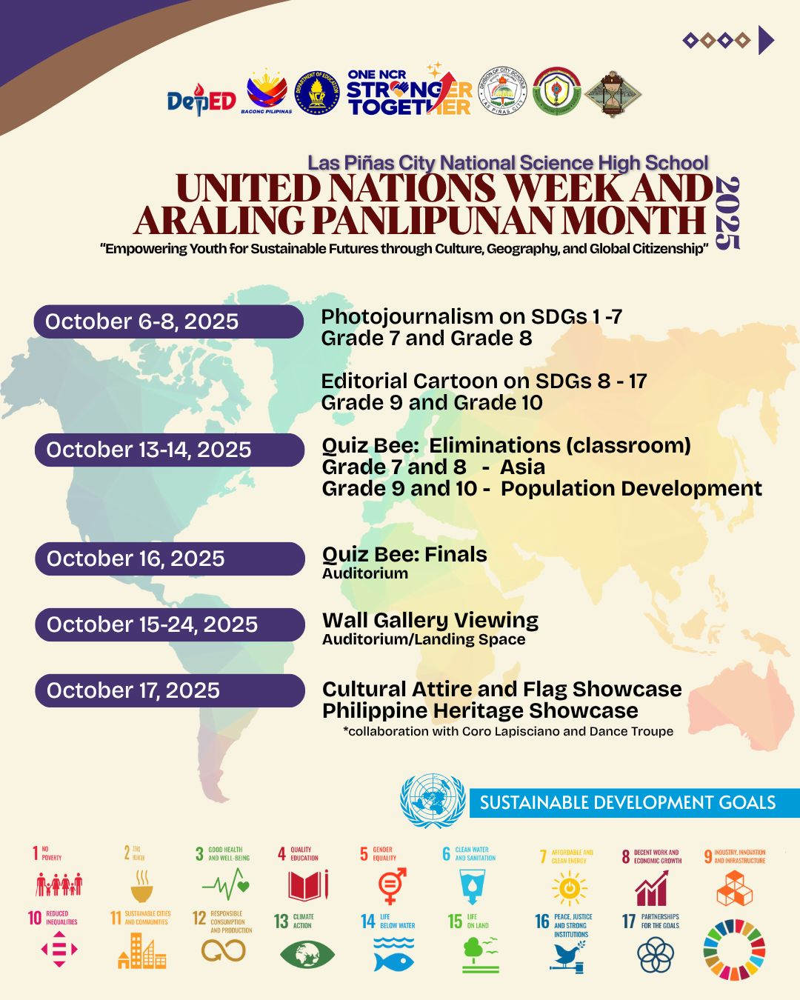

2nd QTR
Buwan ng wika:
The most important thing I learned during the Buwan ng wika is to appreciate your language and culture, and how important it is to share your culture with others. I can apply what I learned by sharing my culture as a bisaya to my friends, by speaking bisaya at home with my family, and by respecting other's culture and language. I think I participated actively because I wore Filipiniana every week to school.
Intrams:
The most important thing I learned during the intramurals is teamwork, sportmanship and cooperation, because despite being divided into groups, the sportmanship still remains. I can apply what I learned by being cooperative during groupworks in school and work with each other as one. I participated actively because i joined my team's girls volleyball, even though i didnt get to play, I also joined the 4 x 100, and cheered for my teammates.
Science month:
The most important thing I learned during the science month is to always show stewardship for the environment and to protect our environment. I can apply what I learned by bwing observant with my surroundings, by being mindful with my trash and by cleaning my surroundings. I participated actively because I helped with creating our WINS corner and I also participated in the miniature paradise with my classmate Miguel.
Ap month:
The most important thing i learned during the Ap month is to appreacite other nation's belief and appreciate their culture and the way they dress. I can apply what I learned by respecting the other nation's culture and not being racist. I participated actively because I wore a cultural attire to school and also did the ap quiz bee elimination with my classmates.

Teacher's day:
The most important thing I learned during the teacher's dsy is that we must appreciate our teacher's hardwork to teach us students. I can apply what I learned by passing my schoolworks on time, respecting teachers and staff, and by participating in class. I participated actively because I joined every game the class officers prepared and also sang with them as the song plays.